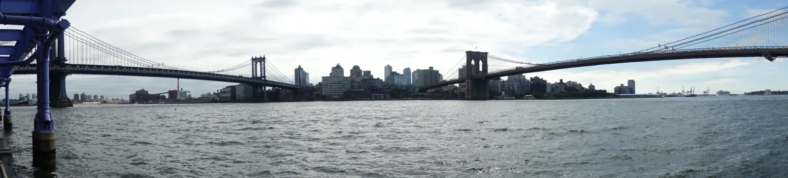

Granite and Glass
My long weekend in October 2019 started in the dark at Newark Airport's own train station, and from there it was a short ride into Manhattan. The whole trip was a lesson in how much ground you can cover on foot and by transit when a city is built for it. Central Park was overcast and dim that first day, with the supertall towers of Billionaires' Row looming over the trees. One of them was as thin as a needle and still had a construction crane perched on its tip!
Walk across the Brooklyn Bridge, of course, but also go down to the water. From a low pier on the East River you can see the whole thing, stone towers and steel cables, with the Manhattan Bridge waiting its turn behind. It opened in 1883 as the longest suspension bridge in the world, and those Gothic arches look more like cathedral doors than engineering. Nearby, the Municipal Building rises over its own triumphal arch, and in Midtown the clock at Grand Central keeps time at the feet of Mercury. Even Lady Liberty made an appearance, a speck across the harbor. Between landmarks I kept tilting my head back at the black glass towers. They make a kind of canyon too, except that these walls were stacked by people, one floor at a time.


I went back in May 2022 and the city had a different mood. It was gray and wet. Paper lanterns hung over Bayard Street in Chinatown, and from the Brooklyn Bridge walkway a heavy purple sky pressed down on Midtown. In Central Park the trees had gone spring green, and wisteria trunks twisted around the posts of a pergola like rope. Even a city this dense finds room for that. From Rat Rock I could see the needle again, and the crane was gone. On the flight out, Lower Manhattan sat small on a pale horizon.